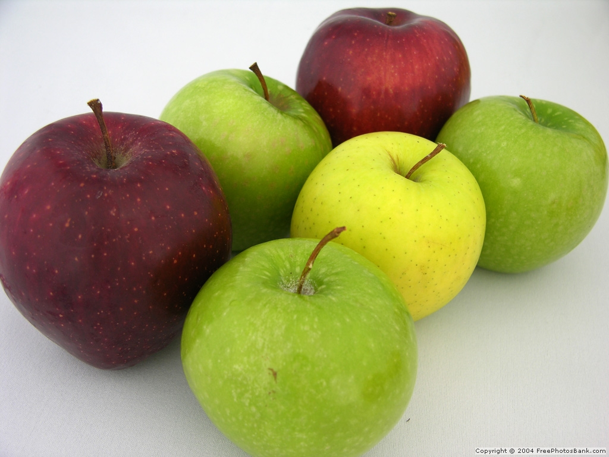
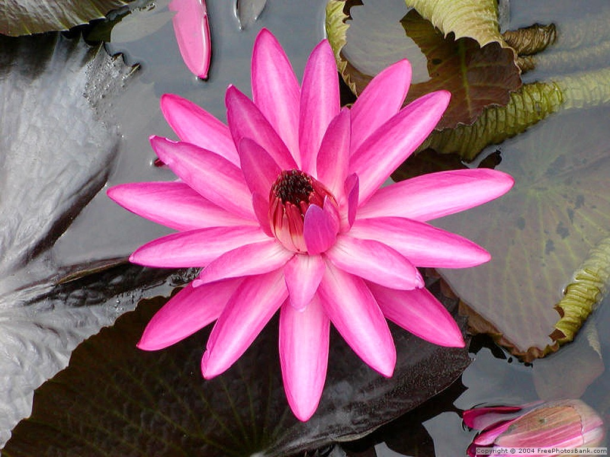
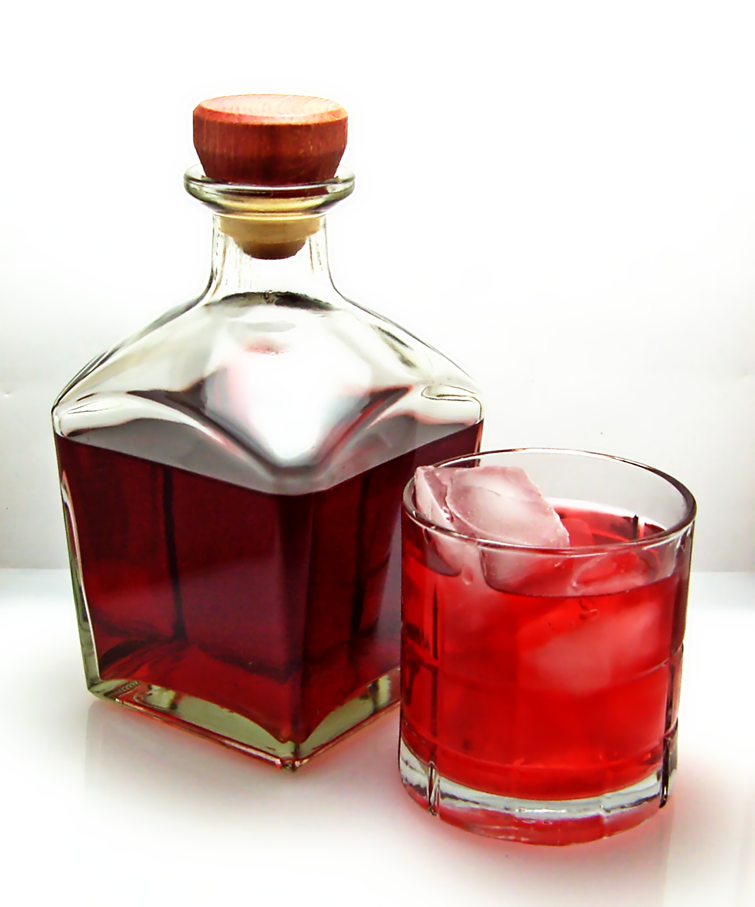

Other Interests
When I am not sifting through equations and doing research, I do occasionally have time for some other hobbies! Here are some of my favorite things to do in my free time:
Cooking
I love cooking all types of foods from all over the world, and I love cooking with people. The kitchen is where I go to relax. Recently, I have started to really focus on my cooking technique so I can start making food look as good as it tastes.
Gardening
Ok, so right now I do not have a garden. I live in an apartment with no balcony, so space for plants is a little hard to come by. However, I do love to garden whenever I get the chance. I especially like growing herbs and vegetables since I can use the produce for my cooking.
Brewing
I only recently started learning about brewing, and it fascinates me. When you are making a batch of beer or mead, you are putting everything you learned in chemistry to practical use. Temperature, pH, boiling time, and exposure to oxygen are just a few things that affect the flavor of a brew aside from the ingredients that you use.
Reading
When I do get a chance to read for fun, I read everything from books to magazines to blogs. I especially like non-fiction, fantasy, and science-fiction. I also like to read through cookbooks and math or science textbooks. Hey, somebody has to read them :)
Computers
Not so much the gaming aspect, but the systems themselves. I like taking them apart, putting them back together, and playing with network systems.